不是被动麦克风
本章的第一条主线是：耳朵不是把空气压力原样交给大脑。耳廓和耳道改变方向相关频谱， 中耳把鼓膜振动传给卵圆窗，内耳再把机械振动转成神经活动。
- 外耳：收集声波并引入方向相关滤波。
- 中耳：鼓膜和听小骨完成机械耦合与阻抗匹配。
- 内耳：耳蜗基底膜把频率组织成空间位置。
DRAFT CHAPTER / HUMAN HEARING
声音进入耳朵后并不是被动记录。外耳、中耳和内耳会改变声波，耳蜗和听神经实验进一步显示出频率选择性； 这些生理学与神经学观察会被经验总结为听觉滤波器组，并影响我们理解听阈、响度、临界频带和掩蔽。
AUDITORY CHAIN
本章的第一条主线是：耳朵不是把空气压力原样交给大脑。耳廓和耳道改变方向相关频谱， 中耳把鼓膜振动传给卵圆窗，内耳再把机械振动转成神经活动。
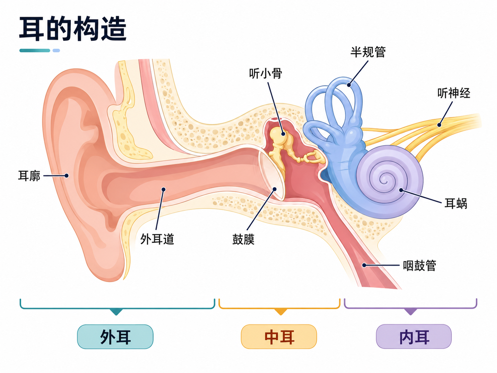
OUTER EAR / 外耳
外耳不是一个简单的入口。耳轮、耳甲腔、耳屏和耳廓褶皱会让不同方向、不同频率的声音在进入外耳道之前已经带上滤波痕迹。 这为后面的方向判断和 HRTF 埋下第一层线索。
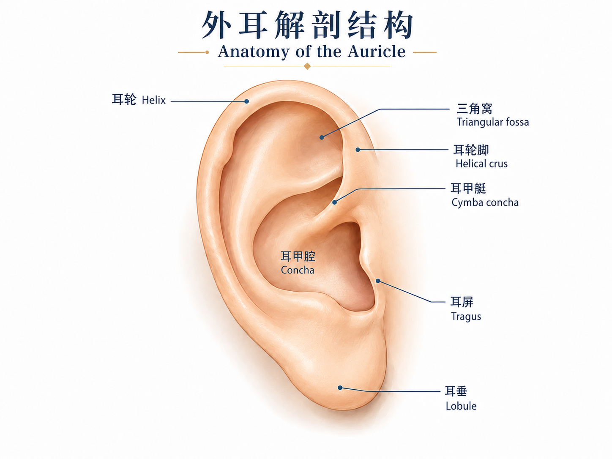
MIDDLE EAR / 中耳
声波推动鼓膜，锤骨、砧骨和镫骨把机械运动向内传递。这个过程不是“声音继续往里走”这么简单， 而是空气振动到内耳液体振动之间的机械耦合与阻抗匹配。
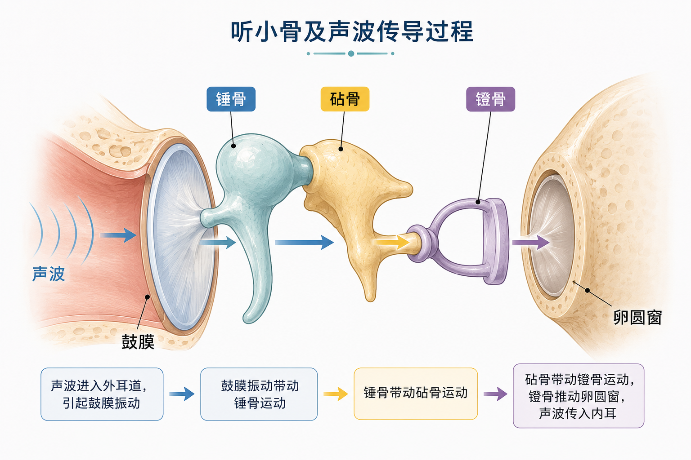
INNER EAR / 内耳
进入内耳后，耳蜗不是简单记录“有多少 Hz”，而是让不同频率在基底膜上形成不同响应位置： 高频更靠近基底端，低频能传播到更靠近顶端的位置。
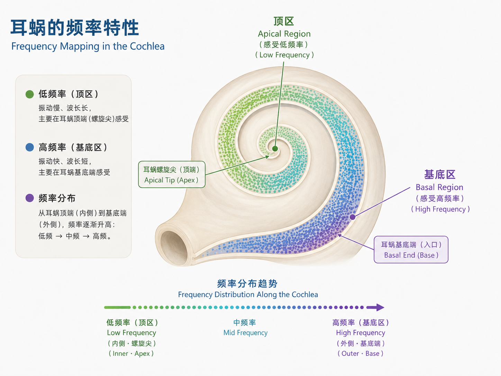
AUDITORY FILTER
耳蜗的构造提示我们：不同频率会在基底膜上形成不同响应。但在课程中更重要的一步， 是看生理学和神经学实验如何测量这种频率选择性，再把实验结果经验总结成一组带通的听觉滤波器。 Gammatone filter 就是常用的经验模型之一，用来模拟耳蜗基底膜附近的频率选择性。
因此，耳蜗不能简单理解成“带分频功能的 ADC”。更贴近课程直觉的说法是： 它像一个连续滤波器组前端，同时伴随自动增益控制、动态压缩和神经脉冲编码； 内毛细胞再把机械运动转换成神经信号。
132 Hz近似 ERB 带宽
Q≈7.6中心频率 / 带宽
滤波器组从实验曲线到可计算前端
Gammatone 不是从第一性原理严格推导出来的耳蜗方程，而是对实验响应形状的经验拟合。 它常被写成一个带有 gamma 包络和中心频率振荡的冲激响应，用来构造符合 ERB 宽度变化的听觉滤波器组。
这里的学习重点不是记住公式形状，而是理解抽象过程：先观察耳蜗和听神经的频率选择性， 再用经验模型把这些响应整理成可计算、可复用的滤波器组。
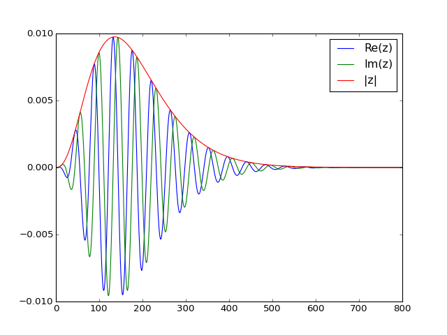
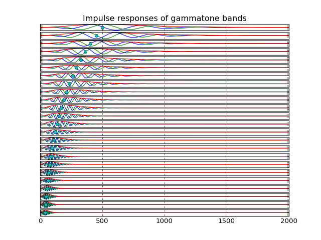
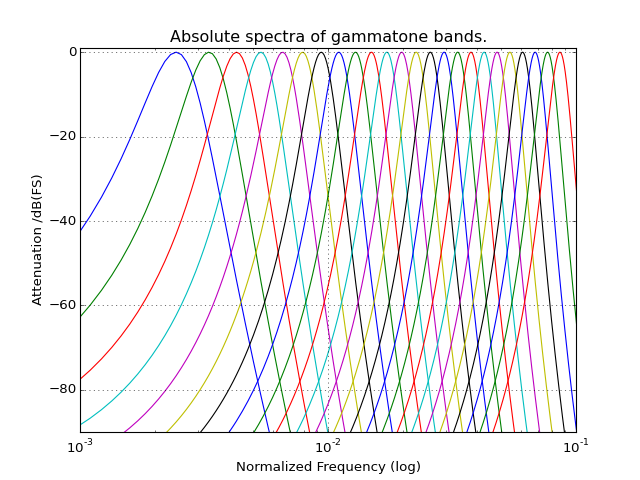
THRESHOLD AND HEALTH
同样的声压级在不同频率上不一定同样容易被听见。听阈曲线把“刚好能听到”的边界画成频率函数： 人耳通常在中频区域更敏感，低频和很高频需要更高声压才容易被察觉。
这条曲线也提醒我们，可听性不是单一 dB 数值决定的，而是频率、声级和听觉系统状态共同决定的结果。


听力图通常横轴是频率，纵轴是听阈级。曲线越往下，表示需要更大的声音才听得见； 如果高频区域明显下降，常见结果就是辅音、齿音、细节和空间线索更容易丢失。
它不是简单给出“听力好或不好”，而是指出哪些频段出了问题，从而决定后续补偿应该集中在哪些频带。
听阈需要在受控声学环境中测量。隔声室、校准耳机和标准化测试流程用于减少背景噪声、 房间反射和设备差异带来的干扰。
测试得到的不是“自然听音体验”的全部，而是一组可重复比较的频率阈值，为诊断和设备调试提供基准。
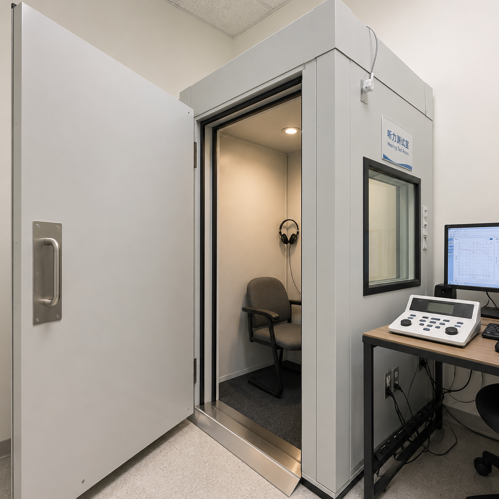
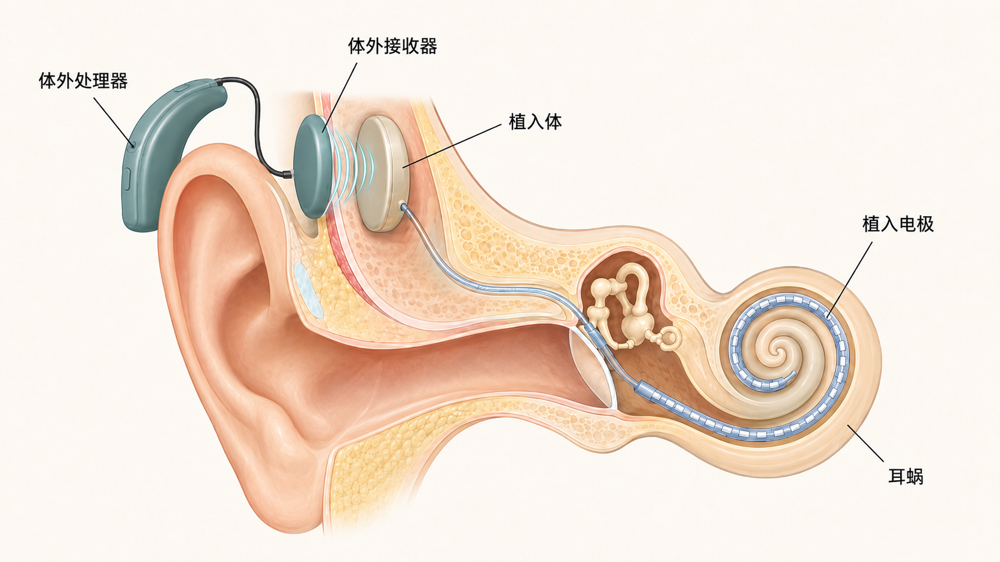
助听器通常面向残余听力做频带增益、动态压缩和反馈控制；人工耳蜗则在毛细胞功能严重受损时， 通过电极阵列直接刺激听神经相关通路。
两类设备都不是“把声音变大”这么简单。它们需要根据听阈、频率分辨率、响度增长和使用场景， 在可听性、舒适度和语音清晰度之间折中。
LOUDNESS
等响曲线把“听起来一样响”转换成一组声压级曲线。1 kHz 常作为参照频率；当频率偏向低频或很高频时， 要达到相同响度通常需要不同的 dB SPL。
这说明响度不是声压级的直接同义词。声压是物理量，响度是经过听觉系统频率敏感性、声级范围和听觉压缩后形成的感知结果。
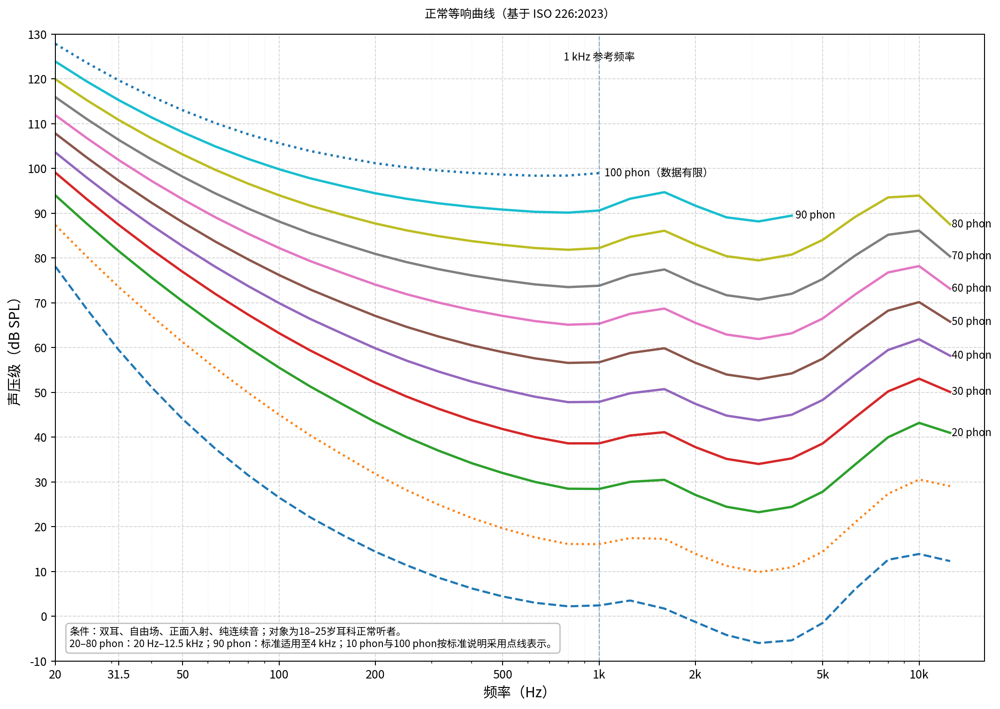
对音乐、语音、环境声这类复杂信号，响度计算不能只查一条等响曲线。算法会先把输入声信号校准到声压级， 再进入频带分析、听觉激励、特定响度和时间整合，最后输出整体 loudness、specific loudness 或时变百分位响度。
这一路线以临界频带、Bark 标尺和特定响度为核心，适合从声压谱或时域信号估计整体响度。 MATLAB 默认使用这个方法，并支持 stationary 与 time-varying loudness。
这一路线更像双耳听觉模型：它从外耳/中耳/耳蜗传递出发，先计算 excitation pattern，
再转换为特定响度，并通过 binaural inhibition 合成双耳结果。MATLAB 中它对应 Method="ISO 532-2"。
MATLAB Audio Toolbox 的
acousticLoudness
函数把这两类 ISO 方法作为可选算法入口。它的典型输出包括总 loudness、specific loudness；
当 ISO 532-1 开启 TimeVarying 时，还可以得到 percentile loudness。
CRITICAL BANDS
中心频率滑块说明：感知上的频率分辨率不是固定 Hz 宽度。中心频率越高，等效矩形带宽通常越宽。
132 Hz近似 ERB 带宽
934 - 1066 Hz示意频带范围
感知分辨率相近频率更容易互相影响
MASKING
当目标声在频率上靠近较强的掩蔽声，并且声级低于简化掩蔽阈值时，它可能存在于信号中但不容易被听见。 这不是声音消失，而是可闻性边界发生了变化。把这个现象和前面的听觉滤波器放在一起看， 声音是否“可闻”，取决于频率距离、声级差、滤波器带宽和上下文，而不是只看频谱上有没有那条线。
可能被掩蔽根据简化阈值模型估计
相距 200 Hz频率距离
特征连接后续会启发音频特征的感知频带组织
掩蔽不只发生在同一时刻。强声音出现后，听觉系统需要一小段时间恢复，后面紧跟的弱声音可能更难被听见， 这叫前向掩蔽。反过来，如果一个强声音很快跟在弱声音之后，后来的强事件也可能干扰前面弱事件的知觉， 这叫后向掩蔽。
Energy masking 更接近外周听觉滤波器的能量竞争：目标和干扰在频率、时间或空间上重叠， 使目标声在早期听觉表示中被压住。Informational masking 则更偏向中枢层面的混淆： 即使目标和干扰在能量上可以分开，听者仍可能因为注意、相似性、语义或声源组织失败而听不出目标。
掩蔽描述频域、时间域和知觉组织层面的可听性下降：目标声仍然物理存在，但在听觉表示或判断过程中变得不突出。
PERCEPTUAL CODING
未压缩 CD 音质立体声大约是 1411 kbps，一首几分钟的歌曲很容易达到几十 MB。 MP3 的关键不是随机删掉波形点，而是让编码器估计听阈、临界频带和掩蔽阈值， 判断哪些频率成分更容易被听到，哪些细节可以用更少比特表示。
编码器先把音频分解到频带或变换域，再估计当前片段的可闻性边界。量化噪声只要被控制在较难察觉的区域， 文件体积就能显著下降，同时保留主要听感结构。
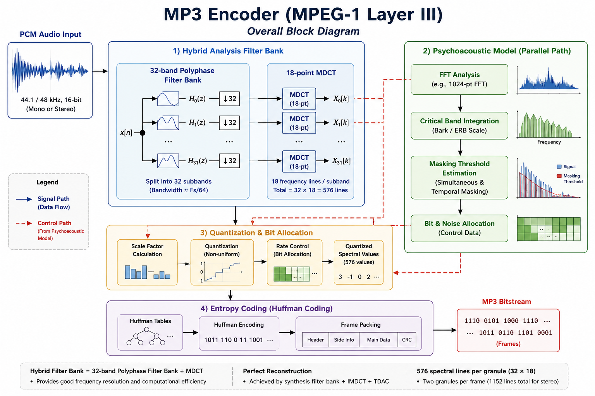
心理声学在这里进入工程语境：掩蔽不是孤立现象，而是感知音频编码能够大幅减少数据量的关键依据。
学习路线
学习路线由 Session 组织；本章内部保留从听觉通路、听觉滤波器、听阈、响度、临界频带到掩蔽的主线。 MP3 承接掩蔽与听阈进入感知编码；音高、音色和 MIDI 拆到独立 Chapter，用于后续音乐与符号表征路线复用。